Los Mossos d'Esquadra mantienen un retén de 72 agentes en la cárcel de Quatre Camins , en La Roca del Vallès ( Vallès Oriental ) , para prevenir nuevos altercados.
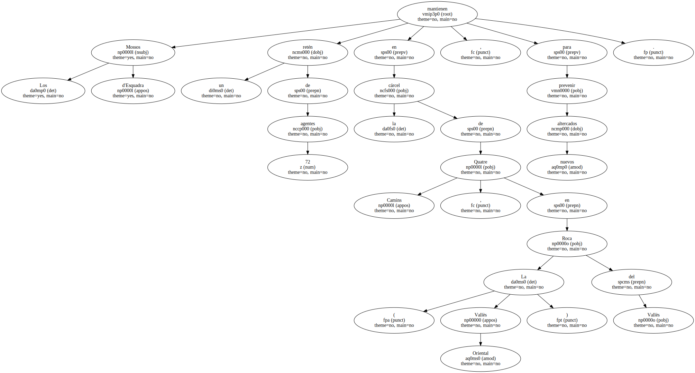Los funcionarios de la prisión consiguieron que la Generalitat accediera a mantener esa extraordinaria presencia de policías tras el violento motín del miércoles.
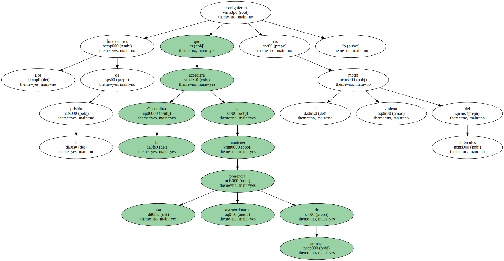Los funcionarios se concentraron ante la prisión poco después de las siete de la mañana y se negaron a entrar si antes la Administración no garantizaba su seguridad.
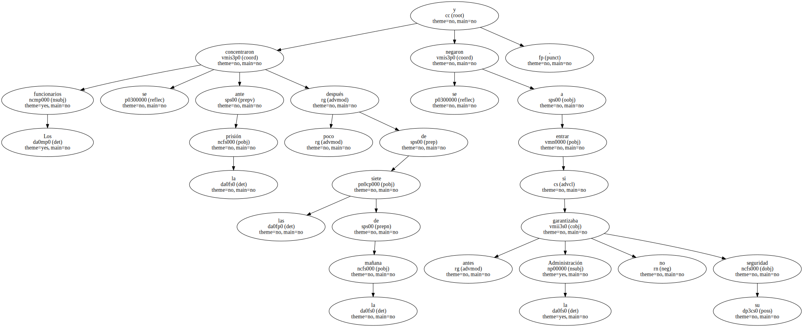La propia directora general de prisiones , Mercedes Sánchez , acudió a Quatre Camins para negociar con los representantes de los trabajadores.
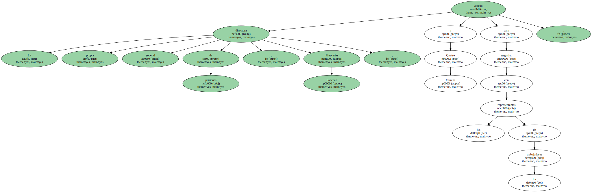A media mañana se alcanzó el acuerdo y a mediodía llegó el refuerzo policial , tras una decisión sin precedentes.
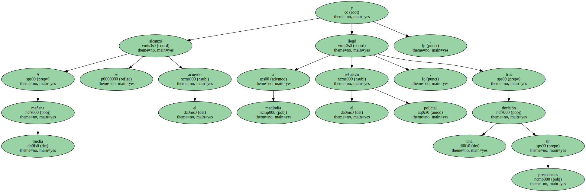Los policías , equipados con material antidisturbios , se mantendrán atentos a posibles incidentes en el cuerpo de guardia que los Mossos tienen en la prisión.
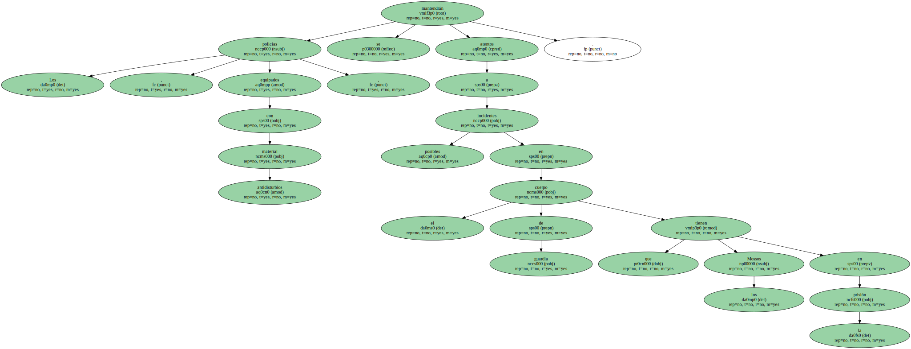Los agentes no patrullarán por el interior de la misma , como en un principio reclamaban algunos trabajadores , todavía afectados por el motín de presos , que se encaramaron al tejado y causaron importantes destrozos , y los plantes vividos esta semana.
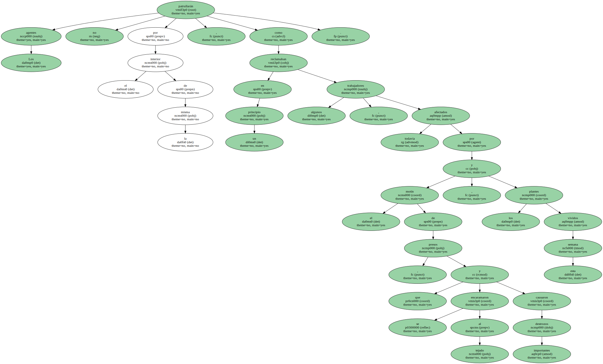Al final , decidieron por unanimidad volver a sus puestos de trabajo.
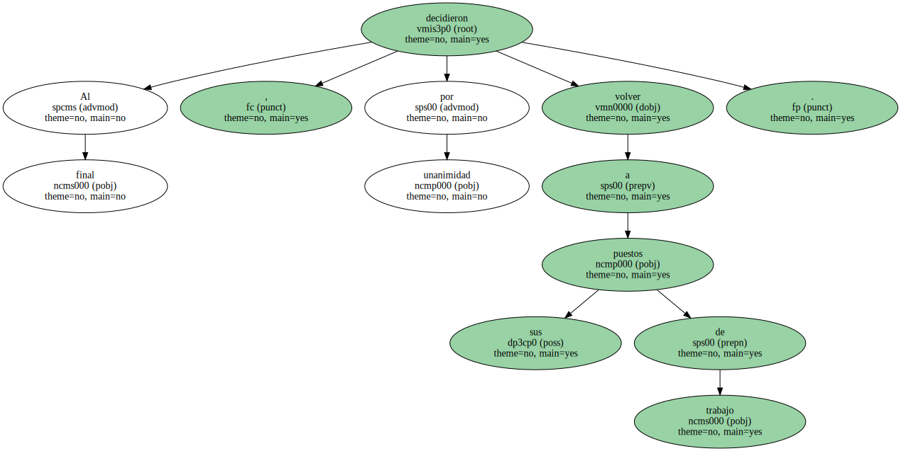EL DOBLE DE AGENTES.
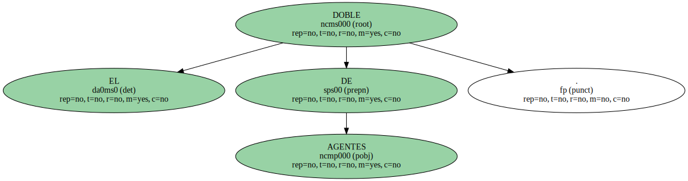Los 72 policías se distribuirán en tres turnos de 24.
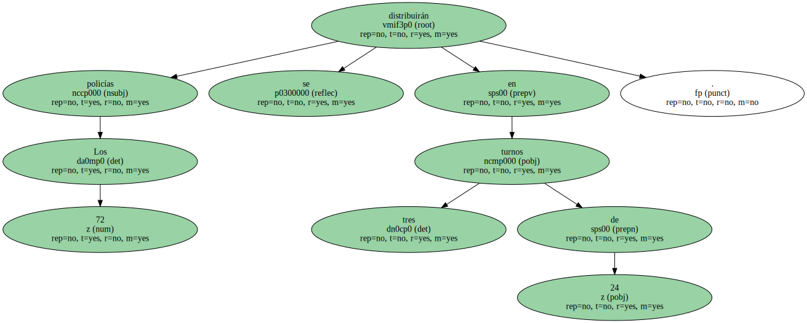El refuerzo supone doblar el dispositivo policial habitual.

Además , los Mossos mantendrán a otros 25 agentes en la comisaría de Granollers , que llegarían a Quatre Camins en unos cinco minutos.
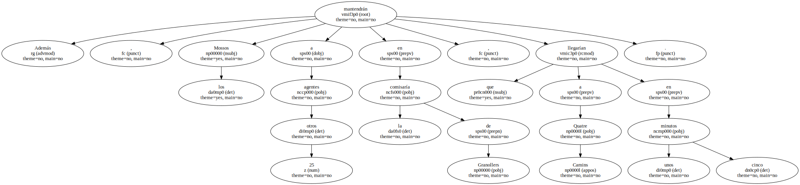Los incidentes han abierto aún más la brecha entre la Conselleria de Justícia y los sindicatos , tras las fugas del pasado año.
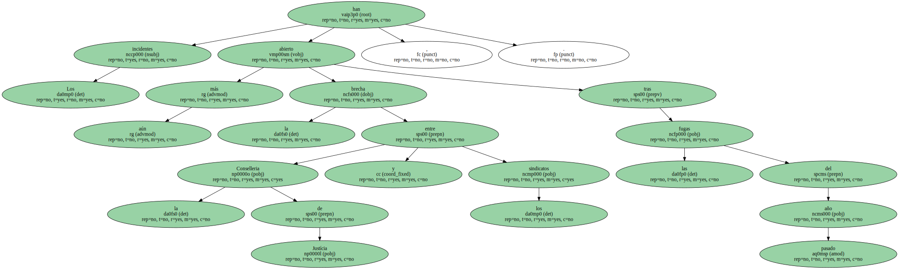Sin embargo , ha provocado una inusual unanimidad a la hora de valorar las causas del conflicto.
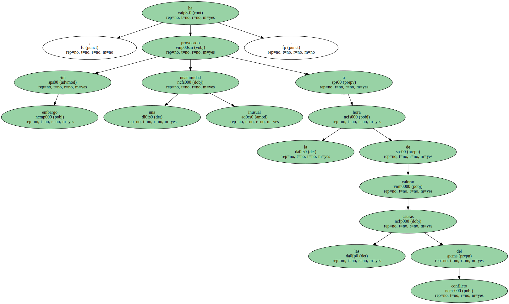Tanto el conseller de Justícia , Josep-Delfí Guàrdia , como el presidente del crítico sindicato CATAC , Miguel Pueyo , han subrayado el origen " organizado y provocado " del motín por parte de grupos antisistema , y el sindicalista señaló a determinados abogados.
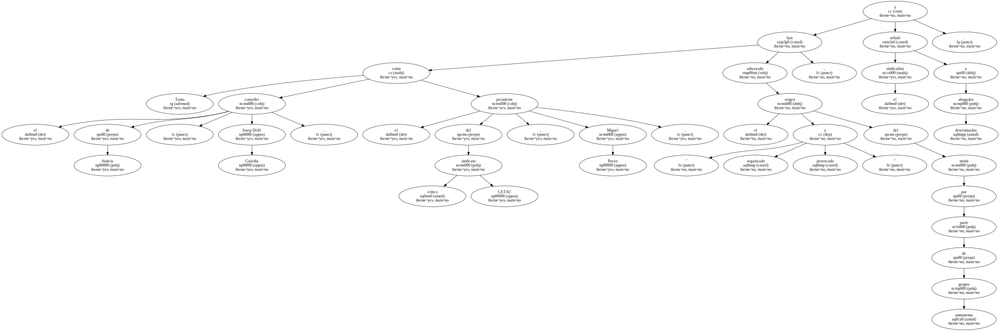DISPERSIÓN DE CABECILLAS.
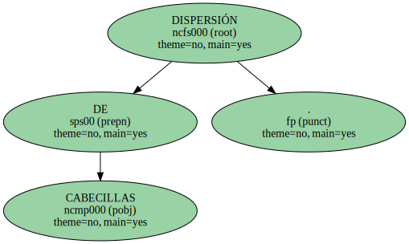Justícia prosiguió ayer con la dispersión de los cabecillas de la revuelta a otras cárceles catalanas , que han acogido ya a unos 70 presos.

Justícia prosiguió ayer con la dispersión de los cabecillas de la revuelta a otras cárceles catalanas , que han acogido ya a unos 70 presos.
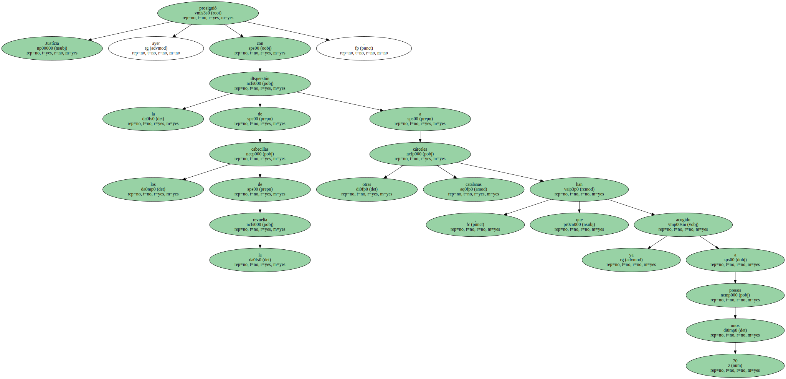Y mantiene conversaciones con el Gobierno central para poder trasladar a internos y , de este modo , esponjar Quatre Camins , Brians y la Modelo.
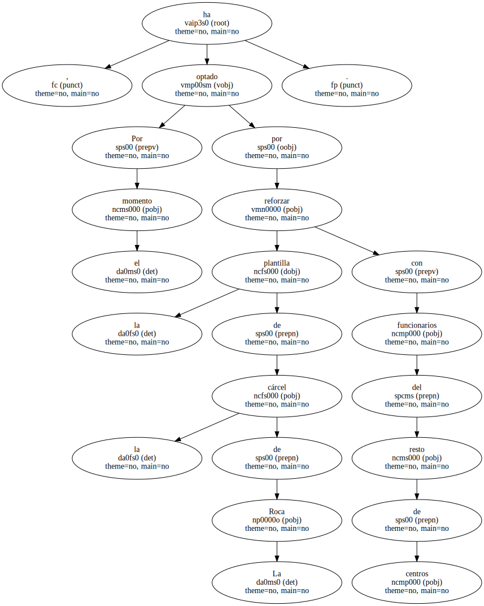Por el momento , ha optado por reforzar la plantilla de la cárcel de La Roca con funcionarios del resto de centros.
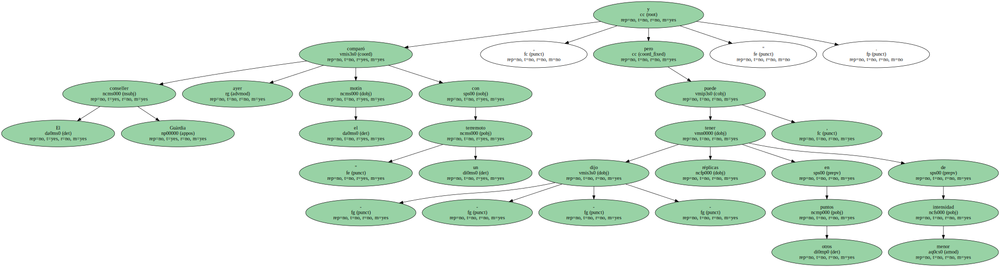El conseller Guàrdia comparó ayer el motín con " un terremoto , y puede tener - - dijo - - réplicas en otros puntos , pero de menor intensidad ".
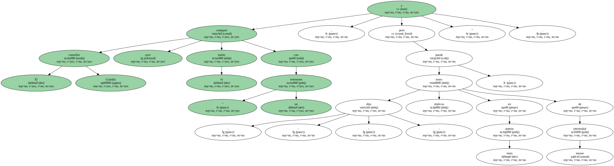Las 4 centrales sindicales rechazan la firma del convenio.
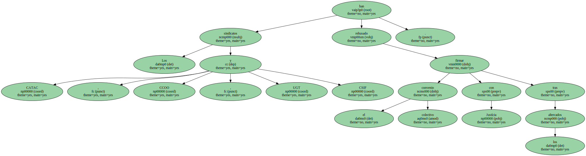Los sindicatos CATAC , CCOO , UGT y CSIF han rehusado firmar el convenio colectivo con Justícia tras los altercados.
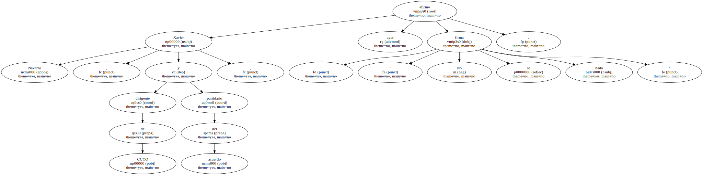Xavier Navarro , dirigente de CCOO y partidario del acuerdo , afirmó ayer : " No se firma nada ".
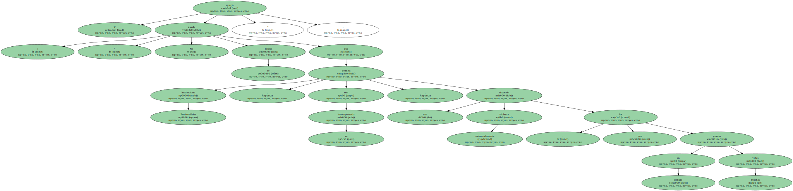Y agregó : " No se puede tolerar que Institucions Penitenciàries permita , con su incompetencia , una situación extremadamente violenta , que ha puesto en peligro muchas vidas ".
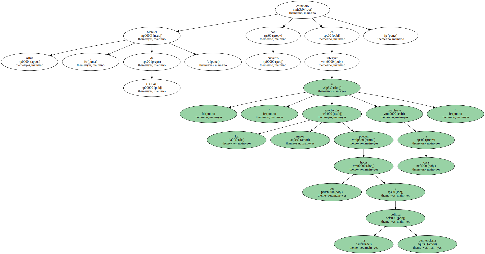Y agregó : " No se puede tolerar que Institucions Penitenciàries permita , con su incompetencia , una situación extremadamente violenta , que ha puesto en peligro muchas vidas ".
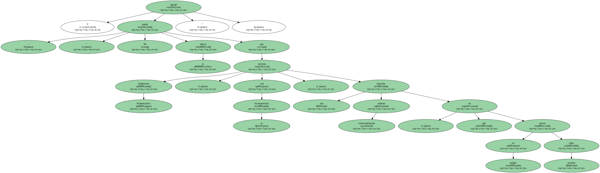Manuel Allué , de CATAC , coincidió con Navarro en subrayar : " La mejor aportación que pueden hacer a la política penitenciaria es marcharse a casa ".
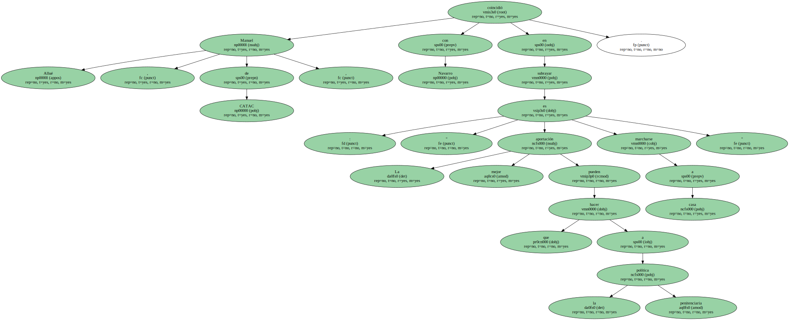